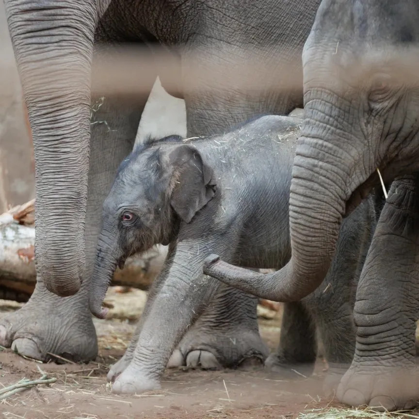
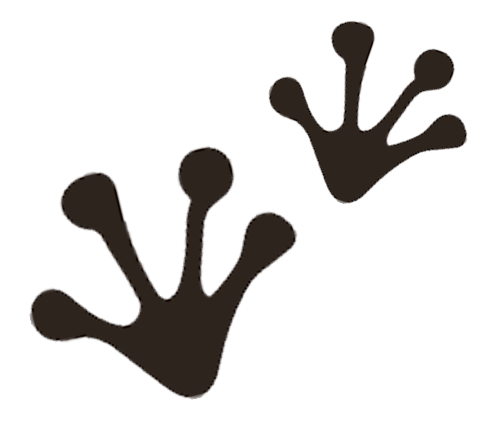

D. 21 - 22 MAJ 2027
Dagens program!
Her kan du læse lidt om de ting som vi tilbyder under eventet
Aktiviteter
Under eventet udbyder vi en masse forskellige aktiviteter for alle vores besøgende, selv dem med pels,
potter, fjer eller andet.
Vi tilbyder bla.
- Adoptions café
- Kom og mød nogle søde dyr som mangler et hjem under trykke rammer
- Donations bod
- Lær om forskellige velgørenheder som Pets & friends støtter
- Fri legs område
- Har dine dyr brug for at brande noget krudt af? her kan dit kæledyr løbe frit rundt i et sikkert område (området er inddelt iforhold til dyrearter for alles sikkerhed)
Du kan finde flere af vores aktiviteter her
Boder
Med et event som dette er det vigtigt at vi også tilbyder mad men da vi har gæster af mange forskellige
arter har vi gjort vores bedste med at tilbyde meget varierende mad.
Madden til mennesker og madden
til
vores mindrer venner ville være tydeligt markeret og er lokaliseret i forskellige steder af parken.
Vi
tilbyder mad til dyr som hunde, katte, fisk, fugle og kaniner.
Du kan finde madbodernes lokation via kortet her.
Velgørenhed
Vi elsker vores pelsede venner og derfor vil vi gerne hjælpe med at gøre verdnen et bedre sted for dem, 50%
af billet salget går til 3 forskellige lokale velgørenheder.
Der ville også være muglighed for at mode
forpersoner fra velgørenhederne og lære mere om det vigtige arbejde de laver.
- Dyrenes beskyttelse
- Besøg deres hjemmeside!
- Dyreværnet
- Besøg deres hjemmeside!
- Dyrenes Alliance
- Besøg deres hjemmeside!
Vi arbejder sammen med ZOO!
Vi ønsker at vores event ikke bare skabber rum for forskellige kæledyr ejere så de kan socialicer men vi
ville også gerne skabbe rum for at lære om og af naturen omkring os, derfor er vi med til at støtte zoo’s
mission.
Hvis du ikke allerede vidte det så er zoo mere end bare et sted man kan interegere med eksotiske dyr, zoo
arbejder også på at bevare verdnens natur og underviser andre i hvordan vi kan bevare vores mange
skrøblige
økosys temer. Du kan læse mere om på zoo’s hjemmeside
zoo er derfor sponsoren bag oplægs scenen hvor du kan lære en masse om planetens mange dyr, hvordan vi
bedst
kan passe på dem og meget andet.

♡
